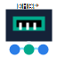

NetBoot DHCP Tool v1.0.10
IPv4 DHCP、手动 IP、静态路由、连通性探测和设备收藏工具
Authors: Joel & Codex
Joel: 1406829360@qq.com
Windows x64 / 管理员运行
Joel: 1406829360@qq.com
Windows x64 / 管理员运行
自动 DHCP 快速流程
- 选择已连接的以太网卡，确认当前网络是隔离调试网络。
- 设置本机 IP、掩码、地址池，点击“开始 DHCP”。
- 客户端执行 renew，或禁用/启用网卡、重新插拔网线。
- 明细按 MAC 去重，状态显示 Assigned、Online、Offline 和 ping 延迟。
- 点击 IP 可打开 http://IP，运行日志在用户本地日志目录。
静态路由
- 可添加多条 IPv4/IPv6 目标网段，并分别选择流量出口网卡。
- 网关留空表示直连；填写同地址族且处于网卡直连网段内的网关表示经该网关转发。
- 目标会自动规范到网段边界，跃点按当前接口跃点自动计算并在预览中显示。
- 不同前缀按最长前缀优先；不允许新增 IPv4/IPv6 默认路由，也不覆盖已有系统路由。
- 只清理本次运行创建且身份完全匹配的路由；已有系统路由不覆盖、不删除。
手动 IP / 扫描 / 收藏
- 输入本机 IP、掩码和可选对端 IP；有对端 IP 时只探测该设备。
- 没有对端 IP 时按网段扫描，结果显示主机名、MAC、HTTP/HTTPS、状态和 ping。
- 手动配置不会写入网关和 DNS，避免影响电脑后续网络。
- 收藏支持设备信息、自定义字段、JSON 导入/导出、DPAPI 密码保护、HTTPS 首选协议和常见 BMC 模板。
状态说明Assigned/已分配：已响应 DHCP；Online/在线：ping 通；Offline/离线：当前 ping 不通。
安全边界仅在隔离调试网络使用，不要接入办公网、生产网或已有 DHCP 的网络。
关闭清理退出或点击 X 会停止 DHCP、取消扫描、释放 UDP 67/68，并清理本次创建的静态路由。
常见处理
| 现象 | 建议 |
|---|---|
| 客户端超时未拿到 IP | 客户端 renew；禁用/启用网卡；拔插对端网线；检查链路灯；重启客户端网络服务或设备。 |
| 工具显示已分配但未在线 | 等待 ping 刷新；确认客户端防火墙是否禁 ping；确认客户端 IP 没有固定到其他网段。 |
| 启动 DHCP 被拦截 | 确认管理员运行，关闭占用 UDP 67 的服务，并仅在隔离网卡上使用。 |
| 路由清理失败 | 保持原网卡连接，查看日志；下次启动工具会依据恢复记录再次提供清理。 |